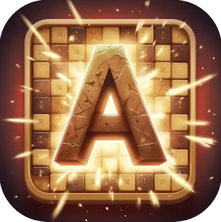

Below are some of my favorite projects I have worked on.
Some were collaborative projects developed within various courses at Chapman University,
while others are personal projects I have worked on in my free time.
Please check out some of my work and feel free to message me on LinkedIn or email me with any questions!
Click on a project to view it up close, or choose a button below to visit my GitHub or the App Store.

During my internship at Galaxy SDK,
I developed and published an iOS detective role-play game “Chat Noir”. I leveraged the Unity engine and the OpenAI API to enable real-time, engaging conversations with NPCs, resulting in successful deployment to the App Store.

During my internship at Galaxy SDK, I
enhanced the player experience for hundreds of players by contributing to bug fixes, performing QA testing, and introducing new gameplay features to the existing mobile game “Anagram” - an online multiplayer competitive word creation game.
Dungeonborne: A 2D rogue-lite dungeon crawler in active development. Experience the synergy of art, sounds, animations, UI/UX, and gameplay mechanics.
Crafted with a robust foundation in game design principles, structured code, and a focus on reusability. Anticipating collaboration in the upcoming 'Collaborative Game Development'
course with a team of 4 students. Expect a polished, feature-rich game ready for Steam and the IEEE GameSig Intercollegiate Game Competition in April 2024.
I recently collaborated with a team of 4 students to create “Blockly-Spot”, a high-level, block-based visual programming language developed using Google's Blockly JavaScript library to command Spot, a Boston Dynamics Robot Dog.
We leveraged the Blockly visual programming language to generate Python code that interfaces with Boston Dynamics' Spot-SDK, establishing a link to Spot and enabling the execution of various movement commands.
Together, we designed and implemented a web application to be utilized by Chapman students, allowing them to seamlessly interact with and control the Boston Dynamics Robot Dog "Spot" on campus.

This is a larger scale project that I was apart of that was developed over the course of
2 semesters by the students in the Software Engineering courses SE300/310/320 at Chapman
University under Dr. Boyd and Professor Prate. The SRS document linked below has a detailed overview
of the product with its parameters, requirements, and goals. Throughout these courses and
time spent working on this project, I have learned about all aspects of the Software Development Cycle,
and had the priveledge to see our team's work come to life on a real product that was published to the
Apple App Store and is used as a tool in a professional work environment.
I worked on this as my final project in an Intro to Unity class with 3 other classmates.
It is a fun game inspired by galaga but with Star Wars themes! I enjoy revisiting this game since it was
the first comprehensive game I created in Unity and it is fun to see how far my games have come.
I made this game as an assignment in an intro to Unity class.
It was inspired by the game Brick Buster, and has multiple levels to play through.
I made as an assignment in an intro to Unity class.
It is a simple Tic-Tac-Toe game that can be played as Player vs Player,
or Player vs varying difficulties of AI. It was a great introduction to using the Unity
engine to create games, and also introduced me to creation of Artificial Intelligence for game opponents.